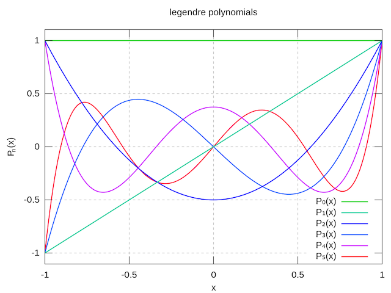

In neuroscience, a measured spike train is often represented as a train of Dirac Delta Functions:
^ ^ ^ ^ ^
| | | | |
--+-------+-------------+---+-------+---->
<- 10ms -> time t
in other words:
s : Real Numbers --> {0, 1}
s(t) |--> Spike at time t?
The most popular analysis techniques that I know of at the moment involve (1) looking at trial-averaged/time-averaged spike rates (e.g. at t = 0s, this neuron is firing around 10Hz, but after the stimulus is turned on at t = 10s, the firing rate increases to around 20Hz.), or (2) considering spike-triggered stimuli (e.g. every time a spike occurs at time t_i, we will look at the stimulus t_i +/- 10 seconds -- can we draw any conclusions about the receptive field of the neuron?).
I am working on a better representation for spike trains. When you have your spike train, you can describe it with the aforementioned function f. Or, you can consider that the first spike occurs at time t_1, the second at time t_2, the third at time t_3, etc. as a sequence: {t_1, t_2, t_3, ...}. In other words, instead of having the aforementioned function s, a spike train can just as well be described as:
T : Positive Integers --> Real Numbers
T(n) |--> Time of nth spike
T is a monotonically increasing, integer valued function -- rather, a sequence! It tells you when the nth spike occurs!
Would there be a way of decomposing T(n) into a (hopefully orthogonal) basis, f_k(n), i.e.:
inf
T(n) = SUM a_k * f_k(n)
k=0
For dimensional analysis, the coefficients a_k's are in units of time, seconds, what not.
Some things to consider, with this mathematical representation:
(1) The original inspiration is from field theory in physics: the gravitational field of Earth is, to an excellent approximation 1/r . However, the closer you get to Earth's surface, you will realize that Earth is not a perfect sphere -- there are mountains and valleys and bodies of water that will have a measurable effect. One can perform a multipole expansion:
g(r) ~= (g_1/r) + (g_2/r^2) + (g3/r^3) + ...
in which the g_1 coefficient is the main 1/r interactions, but g_k for k > 2 represent the non-spherical correction terms [1]. For r >> Earth's radius, we would have (g_1/r) >> (g_2/r^2) -- the first, spherical-Earth term would dominate, allowing us to make the Earth-is-a-perfect-sphere approximation.
Likewise, if we only consider the k=0 and k=2 terms -- let f_0(n) = 1 (a constant), f_1(n) = n, a_0 a constant time deplacement, and a_1 the average spike interval -- the inverse time-averaged spike rate -- we would have to first approximation:
T_1(n) = a_0 * f_0(n) + a_1 * f_1(n)
= a_0 + a_1 * n
The (n+1)th spike would be exactly a_1 after the nth spike -- the first approximation is a perfect, evenly-spaced spike train:
^ ^ ^ ^ ^
| | | | |
--+--------+--------+--------+--------+-->
<- 10ms -> time t
This would be an approximation for actual recorded spike trains (reproduced from top):
^ ^ ^ ^ ^
| | | | |
--+-------+-------------+---+-------+---->
<- 10ms -> time t
The rest of the coeffients, a_k, k > 2, would give the jitter terms, i.e.:
J(n) = T(n) - T_1(n)
= a_2*f_2(n) + a_3*f_3(n) + ...
From considering the lag of T and T_1,
T_1: --+--------+--------+--------+--------+-->
T: --+-------+-------------+---+-------+---->
<- 10ms -> time t
we have the jitters: {J(1) = 0, J(2) = -1ms, J(3) = 4ms, J(4) = -1ms, J(5) = -2ms} to be corrected by the a_2, a_3, a_4, ... terms.
(2) for an ensemble of M neurons, indexed by i = 1 to M, we would have M time-series: {T_1, T_2, ..., T_M). Would the decomposition:
inf
T_i(n) = SUM a_k * h_k(i) * f_k(n)
k=0
tell us anything useful? Given an orthogonal {f_k(n)}, how would we interpret h_k(i) -- the spatial terms?
A problem is this is that some neurons have much higher firing rates than others. We might measure only 10 spikes from neuron 1, but 99 from neuron 2. To get around this, we can normalize the windows:
T_i(x) = T_i(n = N_i * x)
whereby N_i is the total number of spikes observed by neuron i, and x is a fraction from 0 to 1. We would then have:
inf
T_i(x) = SUM a_k * h_k(i) * f_k(x)
k=0
a special case, considering just 2 neurons, T_1 and T_2, with the exact same spike train (miraculously!), except T_2 lags behind by 1ms. We would then have:
+--
| h_0(i = 1) + 1ms for k = 0
h_k(i = 2) = |
| h_k(i = 1) for k > 0
+--
in other words, h_0(i) would represent mean time lags between different neurons' spike trains.
(3) How useful will it be to comparing this representation/decomposition of a spike train with a stimulus input/motor output time series?
(4) Does there exist a good metric for this representation? For example, if you have two nearly-identical spike trains A and B (perhaps B has an extra spike stuck into it) would the distance between the two spikes, with this metric, be very close? This is somewhat related to Parseval's theorem,
here.
This is very reminiscent of a Discrete Fourier Transform. I propose, that instead of using a {sin(kx), cos(kx)} Fourier basis, however, that we use an orthogonal polynomial basis, e.g. the Legendre polynomials. Very quickly, the Legendre polynomials defined on the interval: x in [-1, 1], and are given by:
P_0(x) = 1
P_1(x) = x
P_2(x) = (3x^2 - 1) / 2
P_3(x) = (5x^3 - 3x) / 2
the general formula is given in wikipedia
here.
These polynomials are orthogonal, in that the inner product (given by the interval):
+---
+1 | 2/(2k+1)
INT P_{j}(x) * P_{k}(x) dx = | if j = k
-1 |
-1 | 0, else
+---
We also have that P_{k}(x = -1) = +/- 1, plus if k is even, minus if k is odd, and P_{k}(x = +1) = +1 for all k.
Here is an image reproduced from wikipedia:

Now, we shall consider that from t = 0 to t = P_final, N spikes occur at times {t_1, t_2, ... , t_N}. Proposal: write T(n) as:
inf
T(n) = SUM a_k * P_{k}(x = -1 + (2n - 1)/N)
k=0
The choice of passing (x = -1 + (2n - 1)/N) into the argument of P_{k}, so that the n's are evenly spaced from -1, to 1, and: for n = 1 - 0.5, we have x = -1; and for n = N + 0.5, x = +1.
Simple algebra allows us to invert x(n) to get n(x):
x(n) = -1 + (2n - 1) / N
=> n(x) = (1 + N(x + 1)) / 2
so that n(x = -1) = 1 - 0.5, and n(x = +1) = N.
The great thing about the P_{k} Legendre basis being orthogonal is that to get the coefficients a_k of F, you can integrate:
+1
a_k = (2k+1)/2 INT T(n(x)) * P_{k}(x) dx
-1
Of course, T(n(x)) is only defined on the integers. You can use a change of basis and discrete approximation (rectangle rule!) to get:
N
a_k = (2k+1)/2 SUM T(n) * P_{k}(x(n)) * (2/N)
n=1
Whereby (2/N) = dx/dn . Plugging in the first couple Legendre polynomials:
N
a_0 = (1/2) SUM T(n) * (2/N)
n=1
1 N
= --- SUM T(n) = <T(n)>
N n=1
in other words, a_0 is the mean spike time for your spike train.
To be continued ....
[1] as an aside, the g_k gravitation terms are not constants, but generally depend on the direction of r (projected onto surface of a unit sphere in 3-dimensions)